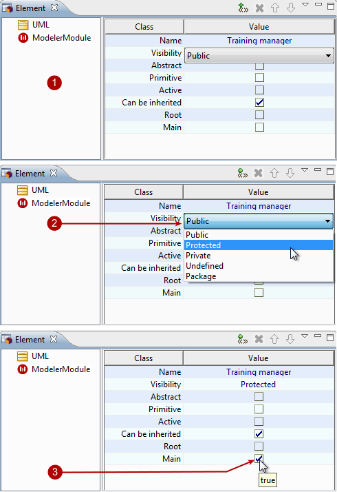

An element’s properties can be modified in the Element view.

Key:
These are the original properties of the “Training manager” class.
Let’s start by changing its visibility – click on the field to activate it, click on the arrow on the right of the field to open the drop-down list and select the visibility of your choice.
Now let’s indicate that the class is a main class by clicking inside the tickbox. A tick appears indicating that the class is now main.